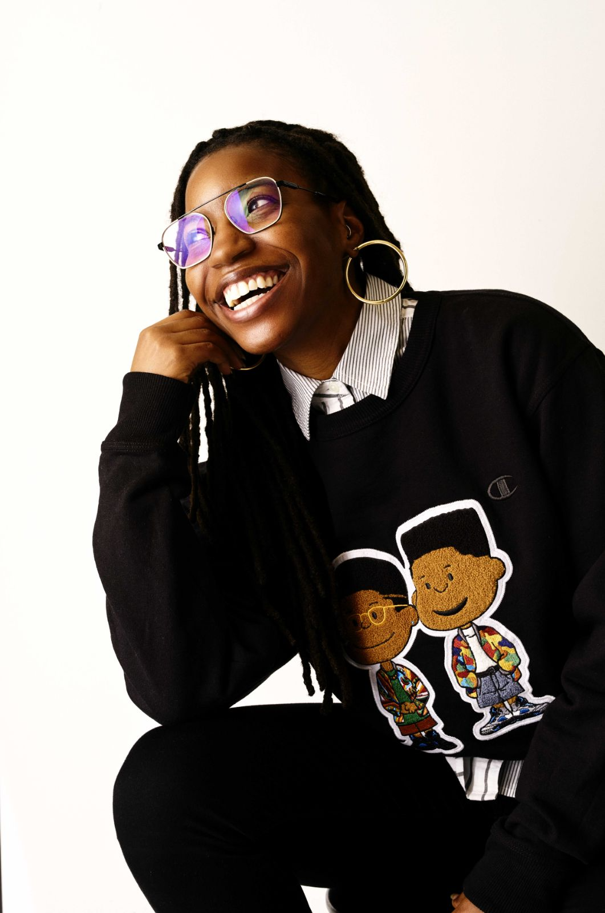

The Capacity to Care: Designing Social Technology for Sustained Engagement With Societal Challenges
Overview
People care about climate change, injustice, and humanitarian crises. The challenge is not apathy but capacity: sustained engagement with large-scale problems is psychologically costly, and social media architecture often amplifies awareness while providing few pathways to meaningful action.
The result is rising distress, overwhelm, and disengagement— particularly among young people who encounter global suffering through platforms designed for attention capture rather than constructive response.
This workshop examines how social technology design shapes the conditions for sustained engagement with societal challenges. Drawing on Tronto’s care ethics framework and research in moral psychology and platform studies, we ask why caring at scale is difficult and how social media can both exacerbate and potentially mitigate this difficulty.
Tronto’s framework shows that good care requires more than awareness: it demands responsibility, competence, and community. Dominant social media architectures stall the caring process at its earliest phase.
We invite researchers and designers to identify platform designs that deplete or support the capacity to care, and to develop design directions for sustainable care: engagement that people can maintain over time without burning out.
> Learn more about Positech: https://positech.github.io/
Organizers

JaeWon Kim

Lindsay Popowski

Louisa Conwill

Elizabeth "Lizzie" Li

Jiaying "Lizzy" Liu

Jose A. Guridi

Theia Henderson

Bingxu Han
Dennis Wang

Angela D. R. Smith

Yasmine Kotturi
Gillian Hayes
Susan Wyche

Casey Fiesler
In-person commitment: All workshop organizers have committed to attending CSCW 2026 in person.
Call for Participation
Submit (by Aug. 3rd)We invite researchers, designers, and practitioners interested in social technologies, care, wellbeing, and societal challenges to participate in this workshop.
Participants will engage in collaborative discussions about how social media and platform design shape people's capacity to sustain engagement with difficult societal issues over time.
Application Deadline: August 3rd, 2026
Application Form: https://forms.gle/gNJ5mevcjAbemMbaA